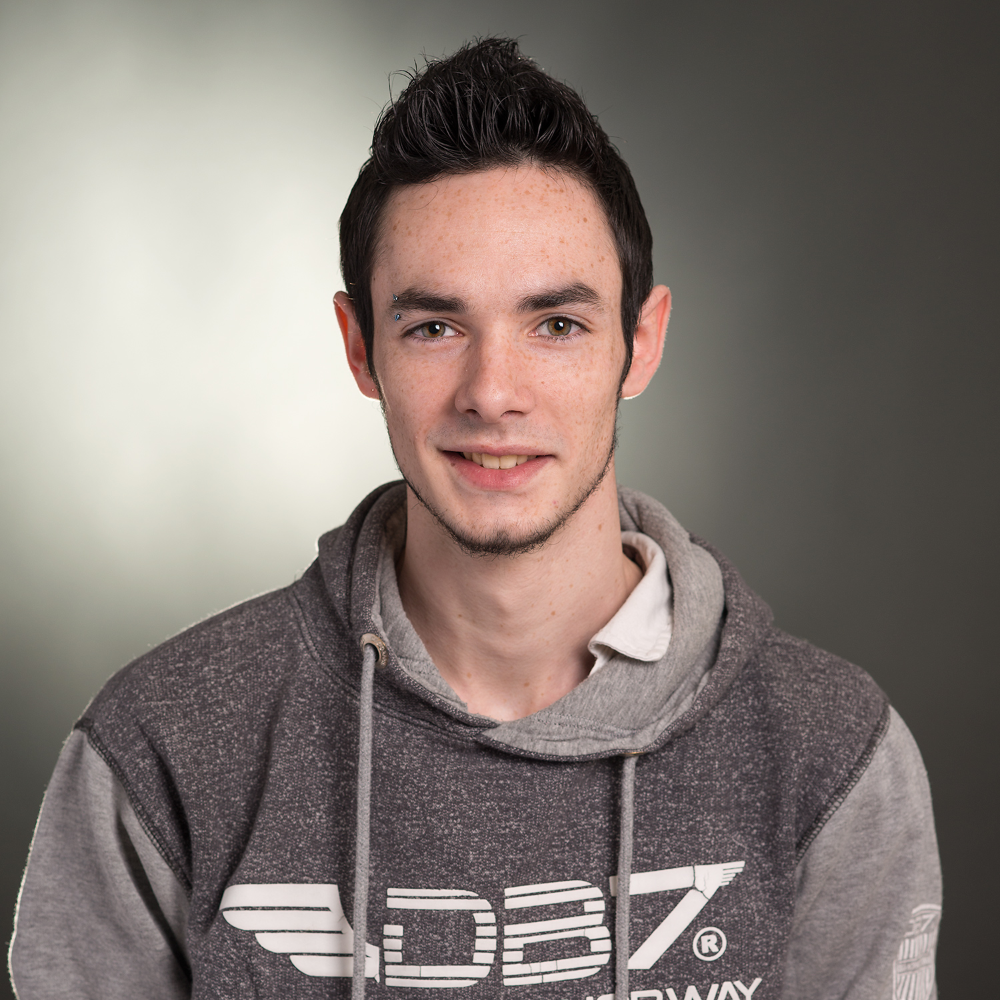

Développeur junior Ruby
Experience:
{% include experiences.html %}
Formation:
{% include formations.html %}

Coordonée:
Ville: La loupe, 28240
Tel: 06.77.70.50.28
Email: crasnier.val@gmail.com
Compétence:
- Ruby
- Ruby-on-Rails
- Html
- Css
- Wordpress
- Bootstrap
- Intégration web responsive
- Methode agile (SCRUM)
- Git & Github
- Python
- Photoshop
Loisirs:
- Sport:
* Vélo
* Musculation
* Course a pied
- Jeux vidéo (Chaine Youtube = SeKiiO)
- Montage vidéo
- Cuisine